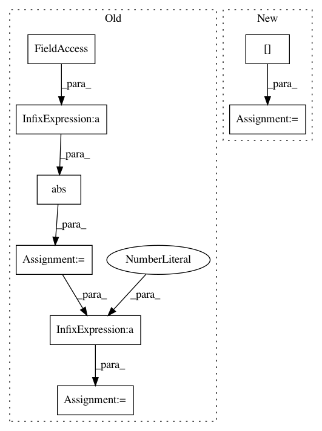

4d0e2271a42a65297d7a1735225a607b17765cf1,nab/detectors/numenta/numenta_detector.py,NumentaDetector,initialize,#NumentaDetector#,68
Before Change
def initialize(self):
calcRange = abs(self.inputMax - self.inputMin)
calcPad = calcRange * .2
self.inputMin = self.inputMin - calcPad
self.inputMax = self.inputMax + calcPad
// Load the model params JSON
paramsPath = os.path.join(os.path.split(__file__)[0],
"modelParams",
After Change
def initialize(self):
// Get config params, setting the RDSE resolution
modelParams = getScalarMetricWithTimeOfDayAnomalyParams(
self.dataSet.data["value"], minResolution=0.001)["modelConfig"]
self._setupEncoderParams(
modelParams["modelParams"]["sensorParams"]["encoders"])
In pattern: SUPERPATTERN
Frequency: 3
Non-data size: 8
Instances
Project Name: numenta/NAB
Commit Name: 4d0e2271a42a65297d7a1735225a607b17765cf1
Time: 2016-03-09
Author: alexdlavin@gmail.com
File Name: nab/detectors/numenta/numenta_detector.py
Class Name: NumentaDetector
Method Name: initialize
Project Name: pymc-devs/pymc3
Commit Name: 21c16153ecd473a027df2af1e9a4fd3c71810e1a
Time: 2017-04-14
Author: maxim.v.kochurov@gmail.com
File Name: pymc3/variational/callbacks.py
Class Name: CheckLossConvergence
Method Name: __call__
Project Name: nilmtk/nilmtk
Commit Name: b523b464d8cafe29e352981c1c6df941f205592a
Time: 2014-07-09
Author: jack-list@xlk.org.uk
File Name: nilmtk/metrics.py
Class Name:
Method Name: mean_normalized_error_power